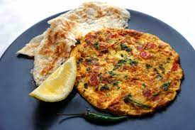

Omlette

Description
It's a dish well known all across the world made with eggs.
I usually make it at home during breakfast.
Ingredients
- eggs
- Oil
- onions
- chilli flakes
- salt
Steps
- spray oil on a pan
- cut some onions and add salt anc chilli flakes to it
- Break two eggs in the onions
- Beat the mixture
- Pour it in the pan and fry it